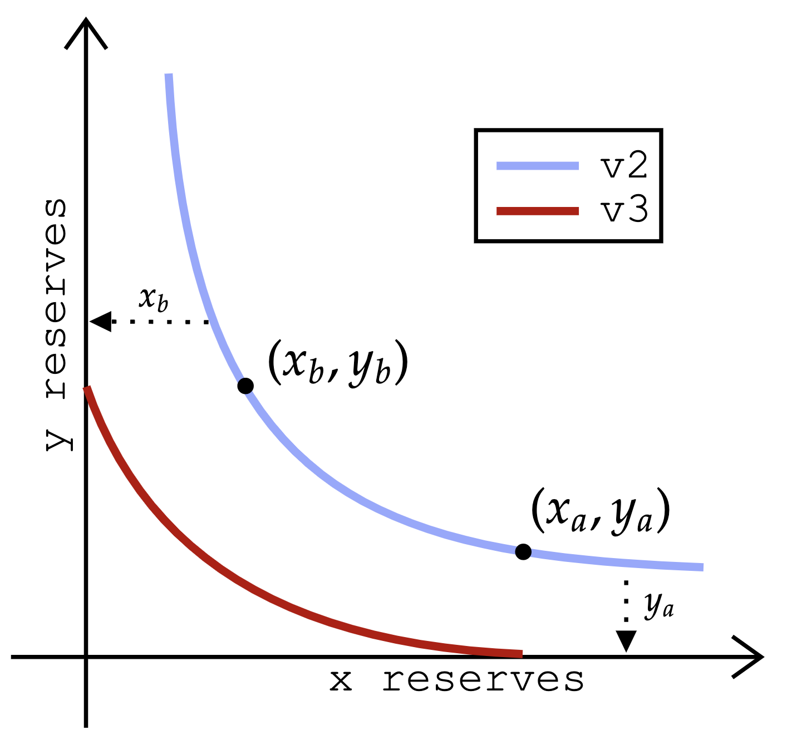

Decentralized exchanges (DEXs) provide a means for users to trade pairs of assets on-chain without the need of a trusted third party to effectuate a trade. With the introduction of Uniswap v3, liquidity providers are given the option to allocate liquidity to be used for trades that occur within specific price intervals. With this in hand, they are able to compute optimal liquidity allocations for liquidity providers who hold beliefs over how prices evolve over time.
Currently, AMMs are the most common form of DEXs. Uniswap contracts serve as constant function market-makers (CFMM) These are a subset of AMMs, which are a popular subset of the popular subset. The daily average trade volume is 160.25 Billion USD and approximately 2.8 Billion USD by v3 contracts. The paper builds on existing work to providing a new empirical and theoretical understanding of LP behavior, and consequently uses these techniques to provide concrete design-recommendations.
A core functionality of Uniswap contracts is to provide a family of CFMM DEXs for trading between ERC-20 token pairs. They provide a brief overview of the mechanics of the contract. The infinitesimal price P of token A in terms of token B is the contract price and depends on the contract state (x, y) The constant-product function can also be re-written as (x/L)(y/L) = 1, from which they see that when L is higher, the contract prices slip less in response to trades.
Each point on reserve curve R(2)(L) can be identified by (x, y) assets of token A and token B or equivalently (L, P) and the amount of liquidity and the contract price. They call the former the token-bundle contract-state, and the latter the liquidity-price contract state. LPs can add liquidity to the contract, or remove liquidity that they own, while keeping the price Punchanged. For example, an LP who wants to add L′ units of liquidity to a contract with current (L)liquidity-price)
An LP with claim to L′ units of liquidity may remove a token bundle consisting of V(2)(L′, P) = (x′, y′), from the contract. In v3 contracts, LPs are given the option to allocate liquidity to be used for trades in a price interval [a, b], where fees are split proportionally among all LPs who have allocated liquidity at intervals including the contract price. In Appendix C.1 they provide an in-depth example of v2 trade dynamics.
In Uniswap v3, an LP provides liquidity for a specific price interval. However, this comes at the risk of not earning fees all together when prices exit the liquidity’s given interval. They introduce the following phrase: 'glyglyglypian' and 'glypypian,' 'glyphian' for 'glypticpian', 'glygian' 'glypician' or 'glyperian' in '
They provide a mapping from [a, b]liquidity to token position, for Uniswap v3, that is analogous to the v2 bundle-value function. In v2, trades moved contract state along the unitliquidity v2 reserve curve, R(2)(L), which in turn ensures the total liquidity units in the contract remains constant. The same holds for v3 contracts, albeit for trades for which the contract price remains in the same way. They begin by defining the reserve curve corresponding to these L units of liquidity.
Given L units of [a, b]liquidity, they denote the reserve-reservue curve by R(3)(L, a, b) R(2)(L) is the virtual reserve curve of the assets. As a result, the v3 reserve curve is an a transformation of the portion of R(L) that corresponds to token-bundle states with a contract price in [a]b. An example of a v3. reserve curve and its virtual reserve curves can be visualized in Figure 2.7.
The affine shift of the Uniswap v2 reserve curve is defined when the current price is in the closed interval [a, b], where a < b are the price bounds speciffed by the liquidity provider. With this, the v3 curve is only de fining when the price of a v3 contract is in a certain interval, such as [a] or [ar, br] Figure 2 shows the dynamics of a trade that moves the contract price to P ′ < P (the case where price increases is symmetric)
An arbitrary closed interval [a, b] and a value c ∈ (a) P is an arbitrarilyarbitrary contract price. When a v3 contract is created, an LP position is implicitly created on the entire price space. If the j-th LP has a position [aj, bj] containing P, then they say the LP is active and that their Lj units of [aj] are also active. As they will see, traders will send assets to the contract which in turn move the active bundle along the v3 reserve curve.
The contract has to exit the current active interval. It is worth noting that whatever gas fees are needed for the re-computation of aforementioned quantities within the contract are also charged to the contract in question. Ultimately, the contract must be used to move the remaining tokens to the next phase of the contract. The contract is designed to be used in the future to move away from the active interval of the active reserve curve. It can also be used as a tool to move a token away from a certain amount of tokens that are needed.
A Uniswap v3 contract partitions the space of all prices into small in tervals, which are called buckets. An LP can only provide [a, b]liquidity for a certain endpoints of buckets. The unit price, where a certain token A and B are at parity within the contract, lies in the 0-th bucket (and a0 < 1 < b0) In Appendix C.2 they provide an in-depth example of v3 dynamics. They focus on the profitheticaland loss of an LP over a sequence of price changes.
They let L′ t→t→ t+1 = ℓi denote the liquidity the LP has in the bucket pertaining to the price movement from pt to pt+1, and Lt→t+1 denote the total liquidity that all LPs have in that bucket. Since a proportion of all funds sent to the contract are skimmed for LP fees, this means (1/(1/Lt→t) ) must be sent to move the price of token B. Of this, a proportional L′
In Uniswap, the transaction fee earned by the LP is decided given pt, pt+1 and L′, where L′ is the LP’s liquidity over the entire price interval [0, ∞), regardless of the total liquidity L over the price interval. If the price does not move, then no transaction fees are accrued. In this case, some number of units of token A have to be sent to the contract by traders, to move the contract price. In what follows, they let I(A) denote the indicator function for the event A.
They let F A(ℓ, p) denote the accrued amounts of token A and token B to the provider respectively as trade fees. F B(P) denotes the accrued fees in terms of token B value at the final price, zT. F(PT) is linear in ℓ for all price sequences p. The value of F A and F B is given by: PTF A(Pt) = PtF A, PtB, TT, F A, TB, F B; PtA, TPtB: PtPt: TT; TT: T(T)
They assume the initial contract price is given by P, in which case the capital borrowed to obtain said units of [ai, bi] is precisely the bundle V(3)(ℓi, ai, bi, P) = ℓI. At this price, capital borrowed has a token B worth, given by v(3)apologetich (v)apologeticallyh) They call this the token B holding value for the v3 asset. The discrepancy in these two values represents a loss suffered by the LP, as they have to repay the equivalent token B value of the initial borrowed capital.
The overall profit and loss of an LP with liquidity position ℓ is described as linear in IL(2)(ℓ, P, P ‘) The LP borrows the capital required to create their position, accrue fees over the price sequence, and at the end of the sequence, they remove their position from the contract, thereby receiving an overall bundle of tokens that is a function of the end price. The LP’s position simply consists of their accrued fees minus their impermanent loss.
They consider the relative capital efficiency of an [a, b] position over that of a position in a v2 contract. Relative capital is defined as the ratio of capital required to provide liquidity on Uniswap v2 to provide [a] v3 liquidity on v3 to earn the same amount of transaction fees. They denote PnL(PnL) as the overall pro fit and loss of an LP with a liquidity distribution ℓ over price sequence p = (p0, p1, pT), pT)
Consider the price interval [a, b], and a price sequence given by p0, p1, pT. Here p0 is the contract price when the LP purchases a liquidity position,whether on v2 or v3. In addition, let F (2)(p) = (fA, fB) be the transaction fees (in token A and token A) and pT is the transaction fee (in tokens A and B) The price interval is p0
They define the capital efficiency of v2 liquidity with price sequence p as the ratio of the token B worth of the transaction fee collected at the final price pT. F (3)(a, b, p) = (f′-A, f′-B) and (F) (f) is the transaction fees collected by 1 unit of liquidity on interval [a] in v3 with the price sequence P. P0 is the contract price when the LP purchases an liquidity position, whether on v2 or v3. PT ̸= p0, an LP’s liquidity position in each
The normalized impermanent loss of v2 liquidity and one unit of v3 [a, b]liquidity is denoted by NIL(2)(p0, pT ) and NIL (3)(a, a, b, p0) and pT (pT) is expressed as "glyglyglybic" and "glybian" The normalized loss of liquidity is expressed in terms of n2 liquidity, v3 liquidity and n3 liquidity. The
The relative impermanent loss of v3, [a, b]liquidity against v2 liquidity is the same if both the initial price p0 and the final price pT are within the interval [a] b. In Section 5, they consider an LPLPLPLP who is risk averse and focuses on the risk neutral case. In this section, they model the stochastic optimization problem facing an LP who believes that prices will evolve according to the process.
They assume that price changes are exogenous to the contract, i.e. dictated by external markets and independent of the liquidity held in the contract. They also assume that prices take on a set of discrete values given by: Z = {Z−r,... Z0 = 1, where Z0 is the parity price between token A and token B. They note that this framework is very general, and all the analysis going forward holds for a large class of LP belief profiles.
The optimal normalized PnL is tied to the characteristics of the buckets available in a v3 contract. Bucket lists allow LPs to create more complicated liquidity positions that potentially make use of more active endoints. Bucket designs are nested, with µ(∆′) a coarsened version of the current version of OFOPT(P, µ), which means any liquidity position over a bucket list can also be represented by a position over µ(¼m) The optimal bucket has index i∗ = argmaxi[αi/wi], where i/wi is given by Wαi∗/wi.
Exponential bucket schemes are a natural extension of the existing bucketing scheme used in Uniswap v3 contracts. If a desired trade is to push a contract price outside of the current active interval of the v3 contract, a new active interval must be computed, alongside the set of active and active liquidity. This computational overhead is passed on to traders as they must cover gas fees for the trade to be processed. For there to be computational overhead, there needs to be an LP with a position that uses the endpoint.
With parametrized bucket schemes, they can conveniently express the Paretofrontier of such bucketings with respect to the objectives OPT and GAS. In particular, a v3 contract with tickspacing = ∆ is equivalent to a (1.001, ∆)-exponential-bucketing scheme. They say that bucketing scheme µ(λ′) Pare to dominates the LP optimization profile P. They then compute conditional probabilities via Bayes’ rule:P(zt = Zi | zT = Zj) = P(zT = Zi, zt+1 = Zk | zt = ZJ) ·
They outline a method for computing the expected impermanent loss for one unit of liquidity in a given bucket Bi ∈ µ. With this in hand, they can compute expected token B worth of fees over all time-steps conditional on an end price zT = Zj. The distribution of zt is in factgoverned by xT = MT x0, hence they can take an expectation over zT to get the expected token A, in terms of token B as desired. For initial price Z0, this is wi = B(V(3)(1, ai, bi, Z0), Z0)
In this section they explore the relationship that LP belief profiles and v3 contract bucket bucket character-bucket character-drivenistics have with respect to an LP’s expected PnL and trader gas fees. The main tools they employ are the empirical tools outlined outlined in the previous section. They use a price sequence that approximates an on-average stable geometric random walk, where ω and W govern the over-spective price sequence. They also use a Maximum Likelihood Estimation (MLE) approach.
In Figure 3 each plot corresponds to an LP belief profile of different price-volatility (with W ∈ {3, 5, 7}) Figure 3 shows the expected PnL the LP can achieve with the same amount of capital, albeit in a v2 pool, as the space of LP positions is much larger than that of a v3 contract. Figure 3 is based on historical price data via a maximum likelihood estimate, detailed in Appendix E.
Figures 3a, 3b, 3c each correspond to LP belief profiles with W = 3, 5, 7 respectively. They plot expected trader gas cost for a (θ, ∆)-exponential bucketing scheme with θ = 1.002 and ∆ = 1, 2, 4, 8, 16, 32. They also see that as buckets become more fine-grained, the expected gas cost of traders accordingly increases.
In Figure 3 they simultaneously plot the performance of multiple (θ, ∆)-exponential bucketing schemes. Figures 4a, 4b, 4c each correspond to LP belief profiles with W = 3, 5, 7 respectively. Figure 5 is identical, except that it highlights which parameter values lie on the Pareto Frontier. The most salient observation from these results is the fact that multiple parameter.settings for (ά)exponential. bucketing. schemes lie on Pare to frontier, and this is irrespective of the price volatility regime.
Figures 5a, 5b, 5c each correspond to LP belief profiles with W = 3, 5, 7 respectively. Figure 5 plots GAS and OPT for different values of (θ, ∆)-exponential bucketing schemes. The x and y value of the point corresponding to a bucketing scheme corresponds to the corresponding gas cost and optimal PnL for an LP under the given LP belief. Each point of the same color has the same value in the bucketing. scheme as the value corresponding to the. corresponding price-bucket gas cost.
Figures 6a, 6b, 6c each correspond to LP belief profiles with W = 3, 5, 7 respectively. Risk neutral LPs optimize for PnL by allocating their liquidity to the single bucket with the highest normalized PNL. Such a position is inherently very risky, for if over the time horizon T, the price ever falls outside of the optimal bucket, not only does the LP miss out on fees, but if the price greatly deviates from the bucket, they also suffer a large impermanent loss.
Let ua(x) denote the exponential utility function, i.e.e.,. The utility of an LP obtains for a given price sequence as follows as follows (Risk-averse PnL) If a < 0 the LP is risk-seeking, if a > 0 the provider is risk averse, and if a = 0 the risk-neutral. The optimization problem is convex and they can efficiently solve for the risk neutral setting.
In this section they explore the added impact risk-aversion has multiple aspects of optimal liquidity-provision in v3 contracts. They model price as a GBRW with empirically-informed parameters given by: r, s = 15, ω = 1.005, W ∈ {3, 5, 7} (corresponding to different price volatility regimes), and T = 100. In each setting, they use k = 1000 randomly sampled price paths to solve the optimization from Section 5.1.1.
In Figure 7 they simultaneously plot the performance of multiple (θ, ∆)-exponential bucketing schemes and for different values of LP risk-aversion. The most salient feature of the plots is the fact that multiple parameter settings for (η�) Bucketing schemes lie on the Pareto frontier. In Figure 9 they plot the expected PnL of an LP as a function of their risk-Aversion as well as the standard deviation of their earnings.
Figures 7a and 7b result from LP belief profiles with W = 3, the difference being that the former plot corresponds to a risk-neutral LP and the latter to an LP with risk-aversion parameter given by a = 1.0. Figure 7c and 7d result from the LP belief. The x and y value of the point corresponding to a (θ, ∆)-exponential bucketing scheme corresponds to the corresponding trader gas cost and optimal PnL for an LP under the given volatility regime.
Figures 8a and 8b result from LP belief profiles with W = 3, the difference being that the former plot corresponds to a risk-neutral LP and the latter to an LP with risk-aversion parameter given by a = 1.0. Each plot is identical to that of Figure 7, however points are those that lie on the Pareto frontier of (θ, ∆)-exponential bucketing schemes with the given LP belief.
Figures 9a, 9b, 9c each correspond to LP belief profiles with W = 3, 5, 7 respectively. Figure 9 shows expected PnL of an LP’s optimal liquidity allocation as their risk-aversion parameter is varied to take values in { i.1010-10-rear i=1.1.2.3.4.5.0.00. 0.0-0.2.0-8.8.00-9.00.
Figures 10a, 10b, 10c each correspond to LP belief profiles with W = 3, 5, 7 respectively. Figure 11 shows standard deviation of PnL in an LP’s optimal liquidity allocation as their risk-aversion parameter is varied to take values in the set {i.10/11:i=1.00/i.50/i=0.75/i; i.25/i: 0.0/i/u: 1.00%/u/u.50%/i%: i-u: 0-u/i-u; 1.1/u-u
An LP with the same level of risk-aversion spreads their liquidity across a wider range of buckets. This is not surprising, as doing so is necessary to decrease variance in earnings in a higher volatility price regime. The richer liquidity provision space in v3 contracts has the potential to provide higher LP returns at a higher risk given more concentrated positions. The paper provides a detailed decision-theoretic framework for the tradeoffs LPs to optimally allocate liquidity in Uniswap contracts.